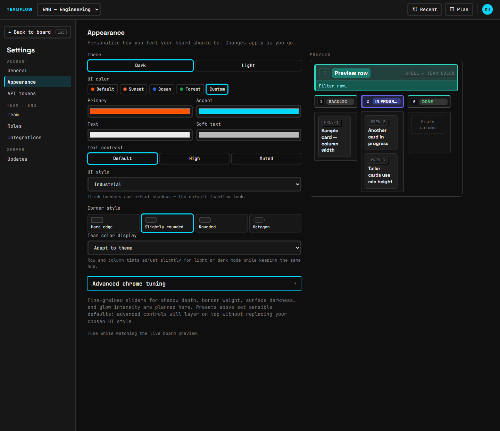
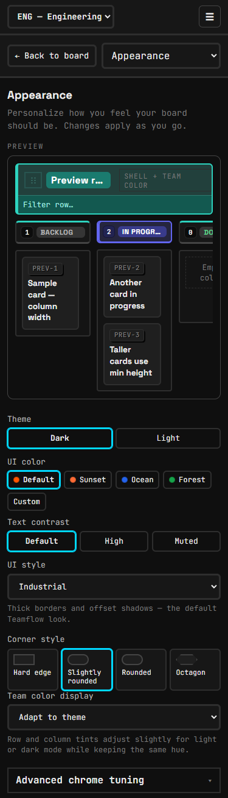
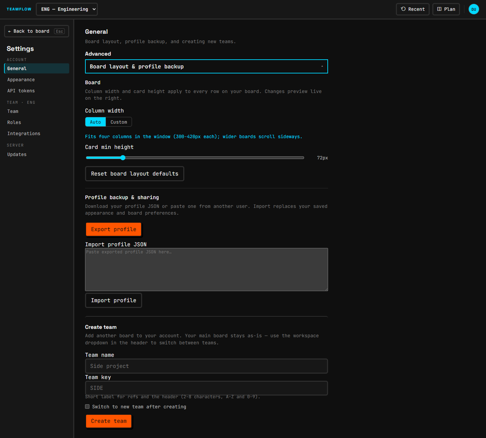
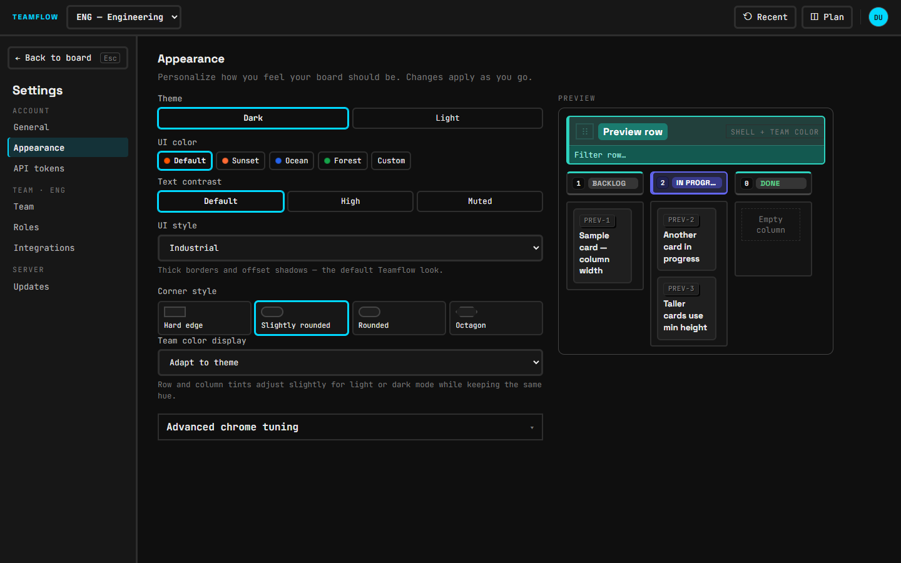
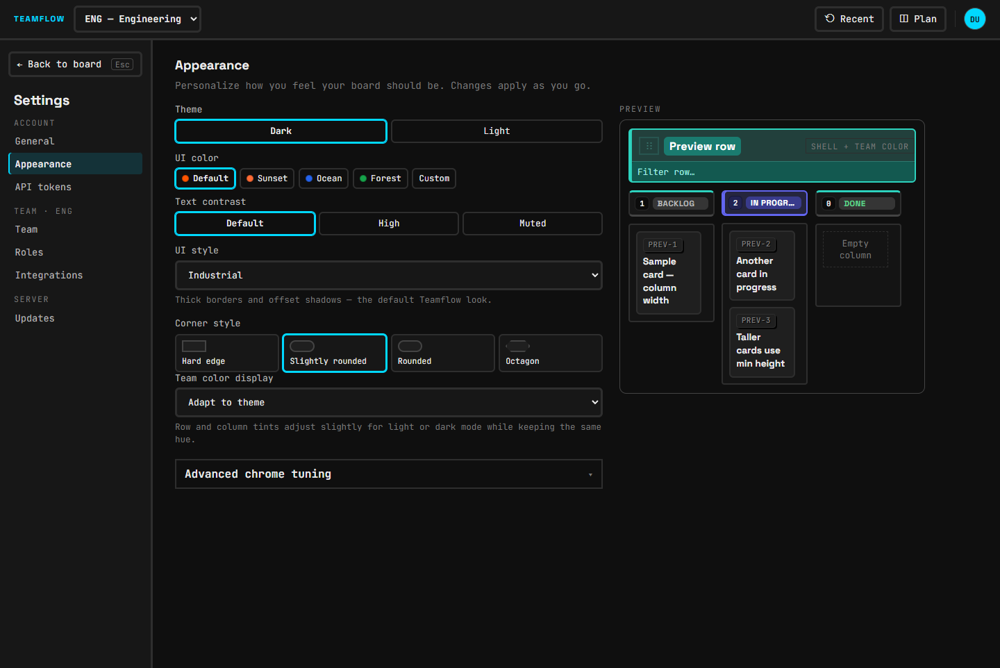
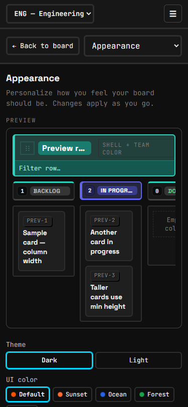

Appearance flow · phase 1 · 2026-10-22
Changing how Teamflow looks
Left: the Appearance panel on main today (screenshots in docs/mockups/appearance-before/, click for full size). Right: the proposed flow, drawn with the app's own tokens. The light/dark toggle above switches this page (and every mock) between themes. Nothing in the app has changed yet; the numbered list at the bottom is what to pick from.
Today
Inventory of the current controls






| Control | Values | What it changes | Stored | Sample preview reacts? |
|---|---|---|---|---|
| Theme | Dark · Light | Whole palette (data-theme) | user profile (server) | yes |
| UI color | Default · Sunset · Ocean · Forest · Custom | Primary (orange buttons) and accent (cyan outlines, refs) | user profile | accent only: the preview has no primary button, so primary changes are invisible |
| Custom colours | Primary · Accent · Text · Soft text (shown only for Custom) | Overrides the four colours | user profile | yes, but Text/Soft text are one value for both themes: pick light text in dark, switch to Light, and text becomes unreadable |
| Text contrast | Default · High · Muted | Text and soft-text strength | user profile | yes (subtle) |
| UI style | 8 in a dropdown: Industrial, Minimal, Soft, Classic, Glass, Terminal, Paper, Neon | Border weight, shadows, glows, some fonts (data-chrome-style) | user profile | yes, but you only see one at a time; the dropdown hides what each looks like |
| Corner style | Hard edge · Slightly rounded · Rounded · Octagon | Radii and chamfers (data-shape) | user profile | yes |
| Team color display | Adapt to theme · Keep team colors literal | How row/column colours mix with the theme | user profile | yes, but only visible in light theme |
| Advanced chrome tuning | none | nothing: a placeholder ("sliders … are planned here") that also mentions a "live board preview" that no longer exists | n/a | n/a |
| Column width | Auto · Custom (300–420 / 240–720px) | Board column width | user profile | not on this panel: lives under General → Advanced |
| Card min height | 48–200px | Card height | user profile | General → Advanced |
| Export / import profile | JSON download / paste | Copies a whole look (and board layout) between people | server | General → Advanced |
| Row headers shown | per row | Board toggle, also in the profile | user profile | not a setting on any panel (fine) |
- No starting point: seven independent choices (2×5×3×8×4×2 = 1,920 combinations) and no named looks to start from.
- Order mixes colour, shape and board ideas; "UI style" and "Corner style" overlap (several styles also change radii), and the empty "Advanced chrome tuning" suggests a third place.
- No Reset, neither per section nor for everything; the only reset ("Reset board layout defaults") is on General.
- No feedback that a change was saved (it is saved 0.6 s later to the server; errors appear as a toast).
- You cannot see the other theme without switching to it.
- The preview shows a row and three columns but no topbar, primary button or drawer, so most of the chrome a style changes is not in it. Its card titles talk about "column width", which is set on another panel.
- On phones the preview sits at the top and scrolls away, so you change settings without seeing them.
- Small: no gap between "Corner style" tiles and "Team color display"; two different control kinds for one-of-N choices (buttons for theme, dropdown for style).
1
The new flow at a glance
Now


Proposed (1440)
TEAMFLOWENG — Engineering ▾DU
← Back to board
Account
General
Appearance
API tokens
Team · ENG
Team
Roles
Integrations
Appearance
✓ SavedReset all to defaultPick a look, then fine-tune it. Changes apply and save as you go.
LooksWhat's this?
Teamflowdark
Daylightlight
Calmdark
Paperlight
Terminaldark
Neondark
CustomiseColour · Shape & style · Board ▾
Share this lookExport · Import ▾
TEAMFLOWFilesDU
Sample row
TODO 2
ENG-1Write the release notes
ENG-2Fix login redirect
DOING 1
ENG-3Board tips popover
+ Add issueENG-3
STATUS
Doing ▾
✓ DoneOrder: Looks (one click) → Customise (opened when you want details) → Share. The preview stays in view and shows the topbar, a row, a column header, cards, a primary button and a drawer edge.
2
Looks: named presets
Now
- Start from scratch every time: Theme, UI colour, Text contrast, UI style, Corner style, Team colours.
- Nothing tells you which combinations work well together.
Proposed
- Six looks, each one card with a miniature of itself: Teamflow (dark · default colour · Industrial · slightly rounded, today's default), Daylight (light · default · Classic · rounded), Calm (dark · Ocean · Minimal · rounded), Paper (light · Sunset · Paper · hard edge), Terminal (dark · Forest · Terminal · hard edge), Neon (dark · custom pink/violet · Neon · rounded). Names and mixes are a first draft.
- A look sets theme, colour, style and corners in one click; text contrast and team colours are left as you had them.
- If you then change anything, the card shows "Teamflow · customised" and offers "Back to Teamflow".
- No new stored field: a look is just a bundle of the existing profile values, so export/import and old profiles keep working.
3
Customise, in three groups
Now


Proposed
ColourReset colour
ThemeDarkLightMatch system
Palette
Default
Sunset
Ocean
Forest
Custom…
TextSofterNormalStronger
Team coloursKeep exact colours in light theme
Shape & styleReset shape & style
Style
Industrial
Minimal
Soft
Classic
Glass
Terminal
Paper
Neon
Corners
Square
Slight
Round
Octagon
BoardReset board
Column widthAutoCustom
Card height72px
- Colour: Theme gains "Match system" (follows the OS); palette swatches show both colours; "Custom…" opens Primary + Accent only. Text contrast keeps its three values with clearer names. Team colours becomes one switch.
- Custom text colours (Text, Soft text) are dropped from the UI: they break the other theme and Text contrast covers the need. Existing values keep working; Reset clears them.
- Shape & style: the 8 styles become picture tiles instead of a dropdown, corners stay tiles. The empty "Advanced chrome tuning" box is removed.
- Board: column width and card height move here from General (General keeps a link "Board size is under Appearance").
4
A preview you can always see
Now


Proposed
- Preview shows the parts a style changes: topbar, row header with team colour, a column header, two cards, a primary "+ Add issue" button and the edge of a drawer with a field.
- Stays in view while the controls scroll (sticky; it already is on desktop, see 7 for phones).
- "As set · Dark · Light" switch on the preview shows the other theme without changing yours. This needs the theme tokens to work on a container as well as on the page root (a mechanical change to
tokens.cssselectors); without it, the switch is dropped and only "As set" remains. - Card titles no longer mention column width.
5
Saved feedback and reset
Now
- Silent save 0.6 s after a change; errors only as a toast.
- No way back to the default look except picking every value again.
Proposed
Appearance
Saving…Appearance
✓ SavedAppearance
Not saved · Retry- A small status pill next to the heading: "Saving…" while the 0.6 s save is pending, "✓ Saved" when the server confirms, "Not saved · Retry" on failure.
- Each group has "Reset colour / shape & style / board"; the header has "Reset all to default". Resets apply at once and show an Undo toast (same dock as the board's undo), instead of a confirm dialog.
7
Phones
Proposed (375)
← BoardAppearance ▾
✓ Saved
Appearance
Pick a look, then fine-tune it.
Teamflow
Daylight
Calm
Paper
Colour▾
Shape & style▾
Board▾
Share this look▾
- Below 768px the preview becomes a slim sticky strip (mini board + saved pill) that stays at the top while you scroll; tap it to expand the full preview. Groups are collapsed by default.
Pick
Proposed changes (one commit each)
| # | Change | Size |
|---|---|---|
| 1 | Regroup the panel into Looks / Customise (Colour, Shape & style, Board) / Share; remove the empty "Advanced chrome tuning". | M |
| 2 | Six named Looks (one click sets theme + colour + style + corners), with "customised" state and "Back to <look>". | M |
| 3 | Styles and corners as picture tiles instead of a dropdown; palette swatches show both colours. | S |
| 4 | Theme "Match system" option (follows the OS light/dark setting; new profile value). | S |
| 5 | Drop custom Text / Soft text from the UI (keep Primary + Accent); Team colours becomes a switch. | S |
| 6 | Move column width and card height from General to Appearance → Board. | S |
| 7 | Richer preview: topbar, row, column header, cards, primary button, drawer edge; card copy fixed. | S |
| 8 | Preview "As set · Dark · Light" switch (needs theme tokens usable on a container). | M |
| 9 | "Saving… / ✓ Saved / Not saved · Retry" status next to the heading. | S |
| 10 | Reset per group and "Reset all to default", each with an Undo toast. | S |
| 11 | "Share this look" on Appearance (download, copy, import by file or paste, preview before applying); removed from General. | M |
| 12 | Phones: sticky mini preview strip at the top, groups collapsed. | S |
After-screenshots will go in docs/mockups/appearance-after/.